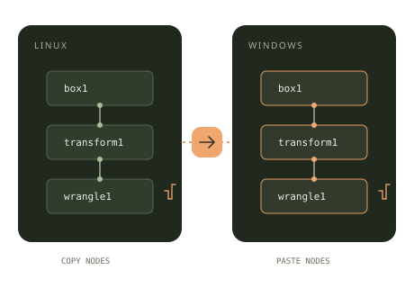

Houdini
Node Copypaster
Tu cadena de nodos, al otro lado de Parsec. Copia y reconstruye parámetros, conexiones y animaciones entre equipos.

Una selección. Dos equipos.Mis herramientas de uso diario, reunidas en un sitio. Utilidades pequeñas para que el trabajo fluya un poco mejor.
Tu cadena de nodos, al otro lado de Parsec. Copia y reconstruye parámetros, conexiones y animaciones entre equipos.

Una selección. Dos equipos.